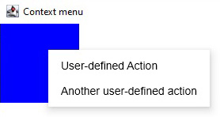
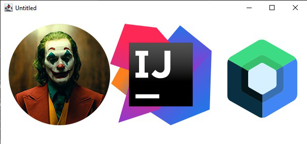

Window Min-Max-Fullscreen
Code
import androidx.compose.foundation.clickable
import androidx.compose.foundation.layout.Column
import androidx.compose.foundation.layout.Row
import androidx.compose.material.Checkbox
import androidx.compose.material.Text
import androidx.compose.ui.Alignment
import androidx.compose.ui.Modifier
import androidx.compose.ui.unit.dp
import androidx.compose.ui.window.*
fun main() = application {
val state = rememberWindowState(placement = WindowPlacement.Maximized)
Window(onCloseRequest = ::exitApplication, state) {
Column {
Row(verticalAlignment = Alignment.CenterVertically) {
Checkbox(state.placement == WindowPlacement.Fullscreen, {
state.placement = if (it) {
WindowPlacement.Fullscreen
} else {
WindowPlacement.Floating
}
})
Text("isFullscreen")
}
Row(verticalAlignment = Alignment.CenterVertically) {
Checkbox(state.placement == WindowPlacement.Maximized, {
state.placement = if (it) {
WindowPlacement.Maximized
} else {
WindowPlacement.Floating
}
})
Text("isMaximized")
}
Row(verticalAlignment = Alignment.CenterVertically) {
Checkbox(state.isMinimized, { state.isMinimized = !state.isMinimized })
Text("isMinimized")
}
Text("Position ${state.position}", Modifier.clickable {
val position = state.position
if (position is WindowPosition.Absolute) {
state.position = position.copy(x = state.position.x + 10.dp)
}
})
Text("Size ${state.size}", Modifier.clickable {
state.size = state.size.copy(width = state.size.width + 10.dp)
})
}
}
}Window Multiple Instances
Code
import androidx.compose.runtime.Composable
import androidx.compose.runtime.key
import androidx.compose.runtime.mutableStateListOf
import androidx.compose.runtime.remember
import androidx.compose.ui.window.ApplicationScope
import androidx.compose.ui.window.MenuBar
import androidx.compose.ui.window.Window
import androidx.compose.ui.window.application
fun main() = application {
val applicationState = remember { MyApplicationState() }
for (window in applicationState.windows) {
key(window) {
MyWindow(window)
}
}
}
@Composable
private fun ApplicationScope.MyWindow(
state: MyWindowState
) = Window(onCloseRequest = state::close, title = state.title) {
MenuBar {
Menu("File") {
Item("New window", onClick = state.openNewWindow)
Item("Exit", onClick = state.exit)
}
}
}
private class MyApplicationState {
val windows = mutableStateListOf<MyWindowState>()
init {
windows += MyWindowState("Initial window")
}
fun openNewWindow() {
windows += MyWindowState("Window ${windows.size}")
}
fun exit() {
windows.clear()
}
private fun MyWindowState(
title: String
) = MyWindowState(
title, openNewWindow = ::openNewWindow, exit = ::exit, windows::remove
)
}
private class MyWindowState(
val title: String, val openNewWindow: () -> Unit, val exit: () -> Unit, private val close: (MyWindowState) -> Unit
) {
fun close() = close(this)
}Window Open-Close
Code
import androidx.compose.material.Text
import androidx.compose.runtime.*
import androidx.compose.ui.window.Window
import androidx.compose.ui.window.application
import kotlinx.coroutines.delay
fun main() = application {
var isPerformingTask by remember { mutableStateOf(true) }
LaunchedEffect(Unit) {
delay(2000) // Do some heavy lifting
isPerformingTask = false
}
if (isPerformingTask) {
Window(onCloseRequest = ::exitApplication) {
Text("Performing some tasks. Please wait!")
}
} else {
Window(onCloseRequest = ::exitApplication) {
Text("Hello, World!")
}
}
}Property Change

Code
import androidx.compose.foundation.layout.Column
import androidx.compose.foundation.layout.padding
import androidx.compose.material.Button
import androidx.compose.material.Text
import androidx.compose.runtime.getValue
import androidx.compose.runtime.mutableStateOf
import androidx.compose.runtime.remember
import androidx.compose.runtime.setValue
import androidx.compose.ui.Modifier
import androidx.compose.ui.unit.dp
import androidx.compose.ui.window.Window
import androidx.compose.ui.window.application
fun main() = application {
var fileName by remember { mutableStateOf("I dont know") }
Window(onCloseRequest = ::exitApplication, title = "$fileName - Editor") {
Column(modifier = Modifier.padding(8.dp)) {
Button(onClick = { fileName = "note.txt" }) {
Text("Save")
}
}
}
}Transparent Window
Code
import androidx.compose.foundation.layout.fillMaxSize
import androidx.compose.foundation.layout.padding
import androidx.compose.foundation.shape.RoundedCornerShape
import androidx.compose.material.Surface
import androidx.compose.material.Text
import androidx.compose.runtime.getValue
import androidx.compose.runtime.mutableStateOf
import androidx.compose.runtime.remember
import androidx.compose.runtime.setValue
import androidx.compose.ui.Modifier
import androidx.compose.ui.draw.shadow
import androidx.compose.ui.graphics.Color
import androidx.compose.ui.unit.dp
import androidx.compose.ui.window.Window
import androidx.compose.ui.window.application
fun main() = application {
var isOpen by remember { mutableStateOf(true) }
if (isOpen) {
Window(
onCloseRequest = { isOpen = false },
title = "Transparent Window Example",
transparent = true,
undecorated = true, //transparent window must be undecorated
) {
Surface(
modifier = Modifier.fillMaxSize().padding(5.dp).shadow(3.dp, RoundedCornerShape(20.dp)),
color = Color(55, 55, 55),
shape = RoundedCornerShape(20.dp) //window has round corners now
) {
Text("Hello World!", color = Color.White)
}
}
}
}Listen Event
Code
import androidx.compose.runtime.LaunchedEffect
import androidx.compose.runtime.snapshotFlow
import androidx.compose.ui.unit.DpSize
import androidx.compose.ui.window.Window
import androidx.compose.ui.window.WindowPosition
import androidx.compose.ui.window.application
import androidx.compose.ui.window.rememberWindowState
import kotlinx.coroutines.flow.filter
import kotlinx.coroutines.flow.launchIn
import kotlinx.coroutines.flow.onEach
fun main() = application {
val state = rememberWindowState()
Window(onCloseRequest = ::exitApplication, state) {
// Content
LaunchedEffect(state) {
snapshotFlow { state.size }.onEach(::onWindowResize).launchIn(this)
snapshotFlow { state.position }.filter { it.isSpecified }.onEach(::onWindowRelocate).launchIn(this)
}
}
}
private fun onWindowResize(size: DpSize) {
println("onWindowResize $size")
}
private fun onWindowRelocate(position: WindowPosition) {
println("onWindowRelocate $position")
}Window Icon
Application Window
import androidx.compose.foundation.layout.Box
import androidx.compose.foundation.layout.fillMaxSize
import androidx.compose.ui.Modifier
import androidx.compose.ui.draw.paint
import androidx.compose.ui.res.painterResource
import androidx.compose.ui.window.Window
import androidx.compose.ui.window.application
fun main() = application {
val icon = painterResource("joker.png")
Window(
onCloseRequest = ::exitApplication, icon = icon
) {
Box(Modifier.paint(icon).fillMaxSize())
}
}
SingleApplication Window
import androidx.compose.material.Text
import androidx.compose.ui.graphics.painter.BitmapPainter
import androidx.compose.ui.res.loadImageBitmap
import androidx.compose.ui.res.useResource
import androidx.compose.ui.window.singleWindowApplication
fun main() {
val icon = BitmapPainter(useResource("joker.png", ::loadImageBitmap))
singleWindowApplication(icon = icon) {
Text("Hello World!")
}
}
Full Screen
Code
import androidx.compose.foundation.background
import androidx.compose.foundation.layout.Box
import androidx.compose.foundation.layout.fillMaxWidth
import androidx.compose.foundation.layout.height
import androidx.compose.foundation.window.WindowDraggableArea
import androidx.compose.ui.Modifier
import androidx.compose.ui.graphics.Color
import androidx.compose.ui.unit.dp
import androidx.compose.ui.window.Window
import androidx.compose.ui.window.WindowPlacement
import androidx.compose.ui.window.WindowState
import androidx.compose.ui.window.application
fun main() = application {
Window(onCloseRequest = ::exitApplication, state = WindowState(WindowPlacement.Maximized), undecorated = true) {
WindowDraggableArea {
Box(Modifier.fillMaxWidth().height(48.dp).background(Color.DarkGray))
}
}
}
Window Close Dialogue
Code
import androidx.compose.material.Button
import androidx.compose.material.Text
import androidx.compose.runtime.getValue
import androidx.compose.runtime.mutableStateOf
import androidx.compose.runtime.remember
import androidx.compose.runtime.setValue
import androidx.compose.ui.window.Dialog
import androidx.compose.ui.window.Window
import androidx.compose.ui.window.application
fun main() = application {
var isOpen by remember { mutableStateOf(true) }
var isAskingToClose by remember { mutableStateOf(false) }
if (isOpen) {
Window(onCloseRequest = { isAskingToClose = true }) {
if (isAskingToClose) {
Dialog(
onCloseRequest = { isAskingToClose = false },
title = "Close the document without saving?",
) {
Button(onClick = { isOpen = false }) {
Text("Yes")
}
}
}
}
}
}Tray Icon
Code
import androidx.compose.foundation.Image
import androidx.compose.foundation.layout.fillMaxSize
import androidx.compose.ui.Modifier
import androidx.compose.ui.res.painterResource
import androidx.compose.ui.window.Tray
import androidx.compose.ui.window.Window
import androidx.compose.ui.window.application
fun main() = application {
val icon = painterResource("joker.png")
Tray(icon = icon, menu = {
Item("Quit App", onClick = ::exitApplication)
})
Window(onCloseRequest = ::exitApplication, icon = icon) {
Image(
painter = icon, contentDescription = "Icon", modifier = Modifier.fillMaxSize()
)
}
}Context menu 1
Code
import androidx.compose.material.Text
import androidx.compose.material.TextField
import androidx.compose.runtime.mutableStateOf
import androidx.compose.runtime.remember
import androidx.compose.ui.ExperimentalComposeUiApi
import androidx.compose.ui.window.singleWindowApplication
@OptIn(ExperimentalComposeUiApi::class, androidx.compose.foundation.ExperimentalFoundationApi::class)
fun main() = singleWindowApplication(title = "Context menu") {
val text = remember { mutableStateOf("Hello!") }
TextField(value = text.value, onValueChange = { text.value = it }, label = { Text(text = "Input") })
}Custom Area Context Menu
Code
import androidx.compose.foundation.ContextMenuArea
import androidx.compose.foundation.ContextMenuItem
import androidx.compose.foundation.background
import androidx.compose.foundation.layout.Box
import androidx.compose.foundation.layout.height
import androidx.compose.foundation.layout.width
import androidx.compose.ui.ExperimentalComposeUiApi
import androidx.compose.ui.Modifier
import androidx.compose.ui.graphics.Color
import androidx.compose.ui.unit.dp
import androidx.compose.ui.window.singleWindowApplication
@OptIn(ExperimentalComposeUiApi::class, androidx.compose.foundation.ExperimentalFoundationApi::class)
fun main() = singleWindowApplication(title = "Context menu") {
ContextMenuArea(items = {
listOf(ContextMenuItem("User-defined Action") {/*do something here*/ },
ContextMenuItem("Another user-defined action") {/*do something else*/ })
}) {
Box(modifier = Modifier.background(Color.Blue).height(100.dp).width(100.dp))
}
}Dialogue 1
Code
import androidx.compose.material.Button
import androidx.compose.material.Text
import androidx.compose.runtime.getValue
import androidx.compose.runtime.mutableStateOf
import androidx.compose.runtime.remember
import androidx.compose.runtime.setValue
import androidx.compose.ui.Alignment
import androidx.compose.ui.window.*
fun main() = application {
Window(
onCloseRequest = ::exitApplication,
) {
var isDialogOpen by remember { mutableStateOf(false) }
Button(onClick = { isDialogOpen = true }) {
Text(text = "Open dialog")
}
if (isDialogOpen) {
Dialog(
onCloseRequest = { isDialogOpen = false },
state = rememberDialogState(position = WindowPosition(Alignment.Center))
) {
// Dialog's content
}
}
}
}Dialgoue using Swing
Code
import androidx.compose.runtime.*
import androidx.compose.ui.window.AwtWindow
import androidx.compose.ui.window.application
import java.awt.FileDialog
import java.awt.Frame
fun main() = application {
var isOpen by remember { mutableStateOf(true) }
if (isOpen) {
FileDialog(onCloseRequest = {
isOpen = false
println("Result $it")
})
}
}
@Composable
private fun FileDialog(
parent: Frame? = null, onCloseRequest: (result: String?) -> Unit
) = AwtWindow(
create = {
object : FileDialog(parent, "Choose a file", LOAD) {
override fun setVisible(value: Boolean) {
super.setVisible(value)
if (value) {
onCloseRequest(file)
}
}
}
}, dispose = FileDialog::dispose
)
Image loading from resources
Code
/*
Add your image in resources directory of project
*/
import androidx.compose.foundation.Image
import androidx.compose.foundation.layout.Column
import androidx.compose.foundation.layout.fillMaxSize
import androidx.compose.runtime.Composable
import androidx.compose.ui.ExperimentalComposeUiApi
import androidx.compose.ui.Modifier
import androidx.compose.ui.res.painterResource
import androidx.compose.ui.window.singleWindowApplication
@OptIn(ExperimentalComposeUiApi::class)
fun main() = singleWindowApplication {
ImageLoading1()
}
@Composable
fun ImageLoading1() {
Column() {
Image(
painter = painterResource("joker.png"), contentDescription = "Joker", modifier = Modifier.fillMaxSize()
)
}
}Image loading from folders
Code
import androidx.compose.foundation.Image
import androidx.compose.foundation.layout.Row
import androidx.compose.foundation.layout.padding
import androidx.compose.foundation.layout.width
import androidx.compose.runtime.Composable
import androidx.compose.runtime.getValue
import androidx.compose.runtime.produceState
import androidx.compose.runtime.remember
import androidx.compose.ui.Modifier
import androidx.compose.ui.graphics.ImageBitmap
import androidx.compose.ui.graphics.painter.BitmapPainter
import androidx.compose.ui.graphics.painter.Painter
import androidx.compose.ui.graphics.vector.ImageVector
import androidx.compose.ui.graphics.vector.rememberVectorPainter
import androidx.compose.ui.layout.ContentScale
import androidx.compose.ui.platform.LocalDensity
import androidx.compose.ui.res.loadImageBitmap
import androidx.compose.ui.res.loadSvgPainter
import androidx.compose.ui.res.loadXmlImageVector
import androidx.compose.ui.unit.Density
import androidx.compose.ui.unit.dp
import androidx.compose.ui.window.singleWindowApplication
import kotlinx.coroutines.Dispatchers
import kotlinx.coroutines.withContext
import org.xml.sax.InputSource
import java.io.File
import java.io.IOException
import java.net.URL
fun main() = singleWindowApplication {
val density = LocalDensity.current
Row(modifier = Modifier.padding(16.dp)) {
AsyncImage(
load = { loadImageBitmap(File("F:\\My Data\\Work\\Learning\\Kotlin\\KotlinDesktopApps\\DesktopToDoApp\\src\\main\\resources\\joker.png")) },
painterFor = { remember { BitmapPainter(it) } },
contentDescription = "Joker",
modifier = Modifier.width(200.dp)
)
AsyncImage(
load = {
loadSvgPainter(
"https://github.com/JetBrains/compose-jb/raw/master/artwork/idea-logo.svg", density
)
},
painterFor = { it },
contentDescription = "Idea logo",
contentScale = ContentScale.FillWidth,
modifier = Modifier.width(200.dp)
)
AsyncImage(
load = {
loadXmlImageVector(
File("F:\\My Data\\Work\\Learning\\Kotlin\\KotlinDesktopApps\\DesktopToDoApp\\src\\main\\resources\\compose-logo.xml"),
density
)
},
painterFor = { rememberVectorPainter(it) },
contentDescription = "Compose logo",
contentScale = ContentScale.FillWidth,
modifier = Modifier.width(200.dp)
)
}
}
@Composable
fun <T> AsyncImage(
load: suspend () -> T,
painterFor: @Composable (T) -> Painter,
contentDescription: String,
modifier: Modifier = Modifier,
contentScale: ContentScale = ContentScale.Fit,
) {
val image: T? by produceState<T?>(null) {
value = withContext(Dispatchers.IO) {
try {
load()
} catch (e: IOException) {
// instead of printing to console, you can also write this to log,
// or show some error placeholder
e.printStackTrace()
null
}
}
}
if (image != null) {
Image(
painter = painterFor(image!!),
contentDescription = contentDescription,
contentScale = contentScale,
modifier = modifier
)
}
}
/* Loading from file with java.io API */
fun loadImageBitmap(file: File): ImageBitmap = file.inputStream().buffered().use(::loadImageBitmap)
fun loadSvgPainter(file: File, density: Density): Painter =
file.inputStream().buffered().use { loadSvgPainter(it, density) }
fun loadXmlImageVector(file: File, density: Density): ImageVector =
file.inputStream().buffered().use { loadXmlImageVector(InputSource(it), density) }
/* Loading from network with java.net API */
fun loadImageBitmap(url: String): ImageBitmap = URL(url).openStream().buffered().use(::loadImageBitmap)
fun loadSvgPainter(url: String, density: Density): Painter =
URL(url).openStream().buffered().use { loadSvgPainter(it, density) }
fun loadXmlImageVector(url: String, density: Density): ImageVector =
URL(url).openStream().buffered().use { loadXmlImageVector(InputSource(it), density) }
/* Loading from network with Ktor client API (https://ktor.io/docs/client.html). */
/*
suspend fun loadImageBitmap(url: String): ImageBitmap =
urlStream(url).use(::loadImageBitmap)
suspend fun loadSvgPainter(url: String, density: Density): Painter =
urlStream(url).use { loadSvgPainter(it, density) }
suspend fun loadXmlImageVector(url: String, density: Density): ImageVector =
urlStream(url).use { loadXmlImageVector(InputSource(it), density) }
@OptIn(KtorExperimentalAPI::class)
private suspend fun urlStream(url: String) = HttpClient(CIO).use {
ByteArrayInputStream(it.get(url))
}
*/
Image loading using Canvas
Code
import androidx.compose.foundation.Canvas
import androidx.compose.foundation.layout.fillMaxSize
import androidx.compose.runtime.remember
import androidx.compose.ui.Modifier
import androidx.compose.ui.geometry.Offset
import androidx.compose.ui.geometry.Size
import androidx.compose.ui.graphics.Paint
import androidx.compose.ui.graphics.drawscope.drawIntoCanvas
import androidx.compose.ui.graphics.vector.rememberVectorPainter
import androidx.compose.ui.graphics.withSave
import androidx.compose.ui.platform.LocalDensity
import androidx.compose.ui.res.loadImageBitmap
import androidx.compose.ui.res.loadSvgPainter
import androidx.compose.ui.res.loadXmlImageVector
import androidx.compose.ui.res.useResource
import androidx.compose.ui.window.singleWindowApplication
import org.xml.sax.InputSource
fun main() = singleWindowApplication {
val density = LocalDensity.current // to calculate the intrinsic size of vector images (SVG, XML)
val sample = remember {
useResource("joker.png", ::loadImageBitmap)
}
val ideaLogo = remember {
useResource("idea-logo.svg") { loadSvgPainter(it, density) }
}
val composeLogo = rememberVectorPainter(
remember {
useResource("compose-logo.xml") { loadXmlImageVector(InputSource(it), density) }
}
)
Canvas(
modifier = Modifier.fillMaxSize()
) {
drawIntoCanvas { canvas ->
canvas.withSave {
canvas.drawImage(sample, Offset.Zero, Paint())
canvas.translate(sample.width.toFloat(), 0f)
with(ideaLogo) {
draw(ideaLogo.intrinsicSize)
}
canvas.translate(ideaLogo.intrinsicSize.width, 0f)
with(composeLogo) {
draw(Size(100f, 100f))
}
}
}
}
}